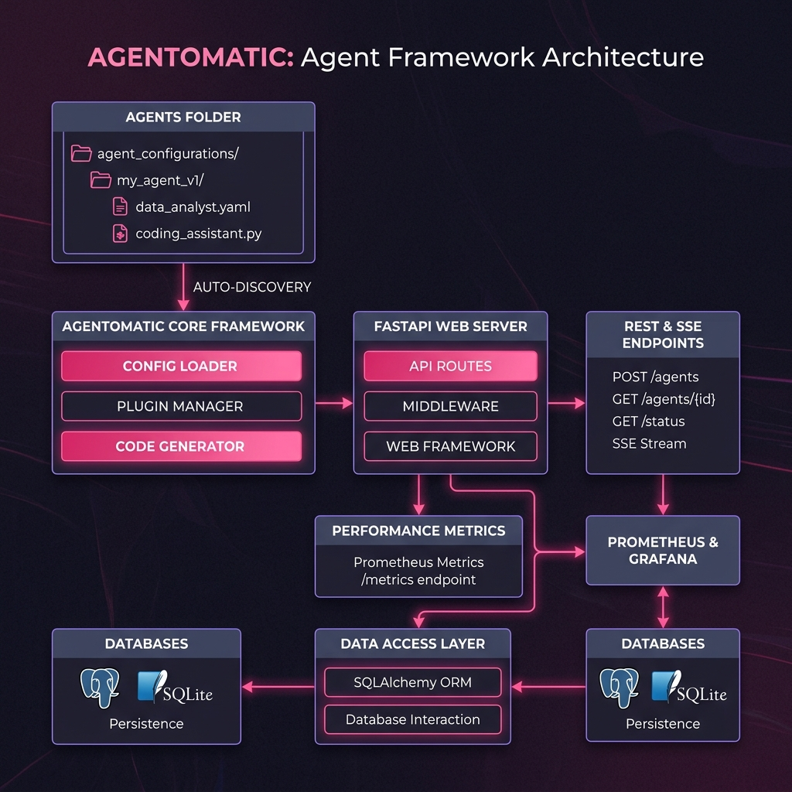

Agentomatic¶
Drop agents, not code. :octicons-zap-24:
The zero-code multi-agent API platform framework. Turn any agent script or graph into a secure, resilient, enterprise-grade microservice with auto-discovery, SSE streaming, thread persistence, and prompt optimization — in 3 lines of code.


What is Agentomatic?¶
Agentomatic acts as a production-ready application server for AI agents. Whether you write raw Python functions, build complex multi-agent orchestrations with LangGraph, or chain tools together with LangChain, Agentomatic auto-discovers your code and mounts a complete FastAPI application with standard REST routes, server-sent events (SSE) streaming, database adapters, telemetry, and rate limiting.
The 3-Line Deploy¶
from agentomatic import AgentPlatform
# 1. Discover agents, 2. Build the API, 3. Deploy
platform = AgentPlatform.from_folder("agents/")
app = platform.build()
Run with uvicorn main:app --reload and visit /docs for a fully documented OpenAPI specification!
Platform Architecture¶
Agentomatic's core principle is Convention over Configuration. By dividing agents into isolated directories containing a manifest, configuration, and an execution graph, the framework automatically maps directory files to API endpoints, database adapters, and prompt templates.

Key Features¶
1. Auto-Discovery & Hot Reloading¶
Drop a directory containing an __init__.py file (which exports an AgentManifest and execution function) into your agents/ folder. Agentomatic automatically spins up a custom FastAPI router, parses your input/output schemas, and mounts a complete suite of 12+ REST endpoints for that specific agent.
2. Synchronous & SSE Streaming¶
Standardize how clients talk to your agents. Every agent gets a synchronous /invoke endpoint and an asynchronous /invoke/stream Server-Sent Events (SSE) streaming endpoint that streams intermediate agent thought steps, tool calls, and final answers in real-time.
3. Session-Aware Chat & Persistence¶
The /chat endpoint manages full context history automatically. By passing a thread_id, Agentomatic reads the conversation log, formats it as history, and executes your agent. Swappable database adapters (MemoryStore, SQLAlchemyStore) let you persist user messages to PostgreSQL, MySQL, or SQLite out of the box.
4. Enterprise-Grade Middleware¶
Keep your agents safe and monitored. Toggle middleware filters globally or per-agent:
- API Key Auth: Secured endpoints with customizable key authorization.
- Token Bucket Rate Limiting: Prevent abuse by limiting queries per IP/User.
- Prometheus Metrics: Monitor latency, request counts, and active connections at /metrics.
- Structured Logging: Context-scoped loguru logs tracking execution durations and exceptions.
5. Prompt Tuning & Optimization (DSPy-inspired)¶
Tune prompts like hyper-parameters. Agentomatic includes a prompt optimization module with 7 optimization strategies (e.g. iterative_rewrite, few_shot_bootstrap) and 8 evaluation metrics (answer relevancy, faithfulness, toxic speech check, etc.). Generate synthetic datasets with a single command and track prompt version history with side-by-side HTML reports.
6. ChatGPT-like Debug UI¶
No frontend development required. Run agentomatic run --with-ui to launch a built-in, production-quality Chainlit chat interface where you can test agents, select prompt versions, inspect step-by-step tool invocations, and submit feedback ratings.
How does it compare?¶
| Feature | Raw FastAPI + LangChain | Agentomatic Platform |
|---|---|---|
| Route Generation | Manual routing code per agent | Auto-generated (12+ routes/agent) |
| SSE Streaming | Custom generator/FastAPI event parser | Native SSE wrapper |
| History Storage | Manual DB schema and connection pools | SQLAlchemy/Memory adapters |
| Metrics / APM | Manual Prometheus exporters | Plug-and-play middleware |
| Prompt Tuning | Hardcoded, untracked templates | prompts.json hot-reload + DSPy optimizer |
| Debug Console | None or expensive third-party tools | Built-in Chainlit Chat UI |
Quick Installation¶
Install Agentomatic and all its production components (including optimizer and web UI) using pip or uv:
# Complete install with all databases, UI, and optimizer features
pip install agentomatic[all]
# Or with uv
uv add agentomatic --extra all
Create Your First Agent¶
Scaffold a basic chatbot and start the local API platform with two terminal commands:
# 1. Initialize a chatbot template
agentomatic init helper_bot --template basic
# 2. Run the platform with the interactive debugging UI
agentomatic run --with-ui
Your Swagger API documentation is available at http://localhost:8000/docs, and the Chat UI is ready at http://localhost:8000/chat!